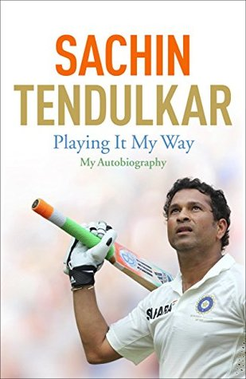

Rich Dad Poor Dad

Auther: Robert T. Kiyosaki
Rich Dad Poor Dad is Robert's story of growing up with two dads — his real father and the father of his best
friend, his rich dad — and the ways in which both men shaped his thoughts about money and investing.
Playing It My Way

Authers: Boria Majumdar and Sachin Tendulkar
This is the autobiography of legend and the renowned personality in cricket, Sachin Tendulkar. Sachin
Tendulkar played for good 24 years and retired in 2013. In this book Sachin talks about his journey from his
first Test match at the age of 16 to his 100th international century and the final farewell.